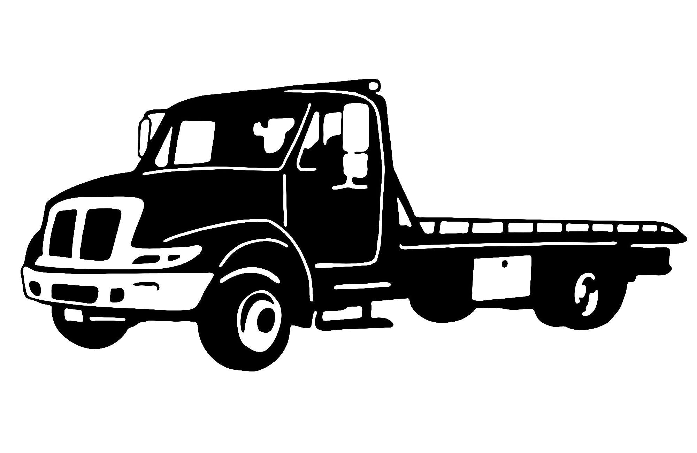

24/7 Emergency Towing
Our round-the-clock towing service ensures that no matter when you find yourself stranded, we are just a call away. From accident recovery to emergency breakdowns, our fleet is equipped to handle all types of vehicles.